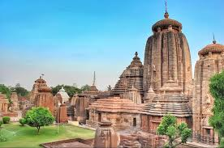

Discover Bhubaneswar



The Temple City of India
Bhubaneswar, the capital of Odisha, is a city where tradition meets modernity. Known as the “Temple City of India”, it houses ancient temples, cultural heritage, and fast-developing infrastructure.
Rich festivals, Odissi dance, and temple rituals.
Home to IIT, AIIMS, and leading universities.
Lingaraj Temple, Nandankanan Zoo, Khandagiri & Udayagiri.